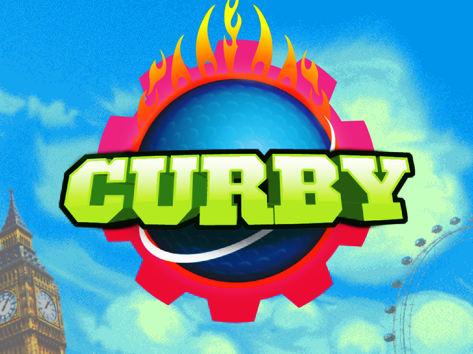
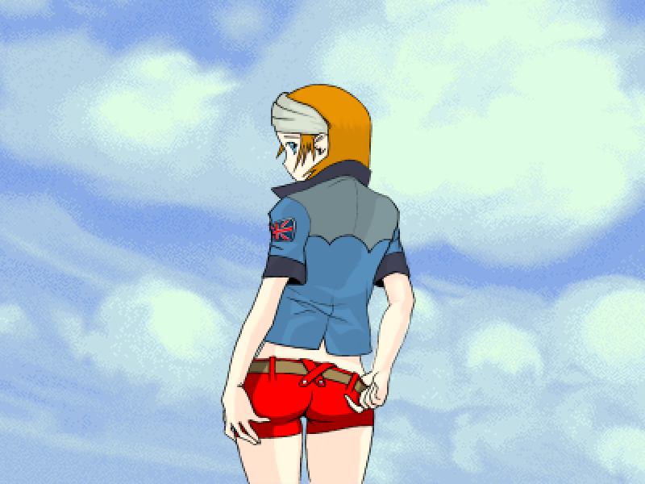
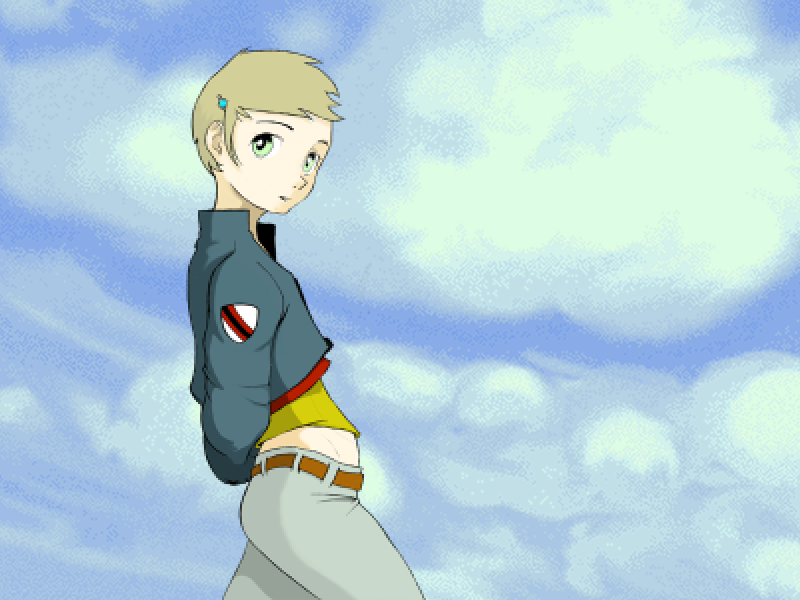
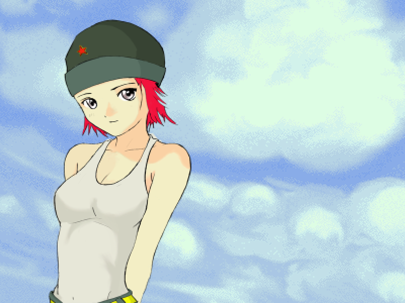
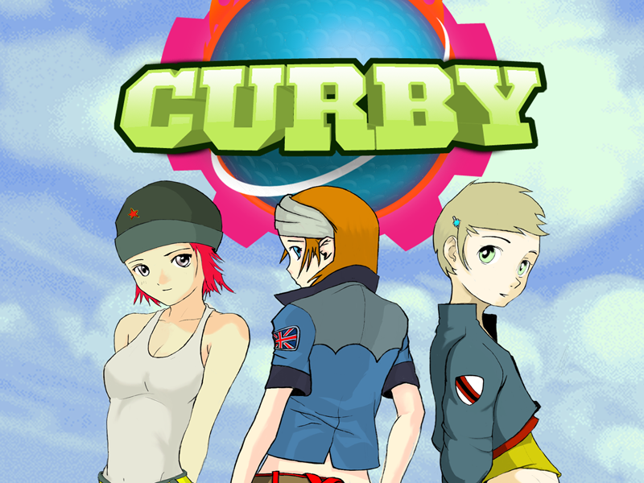
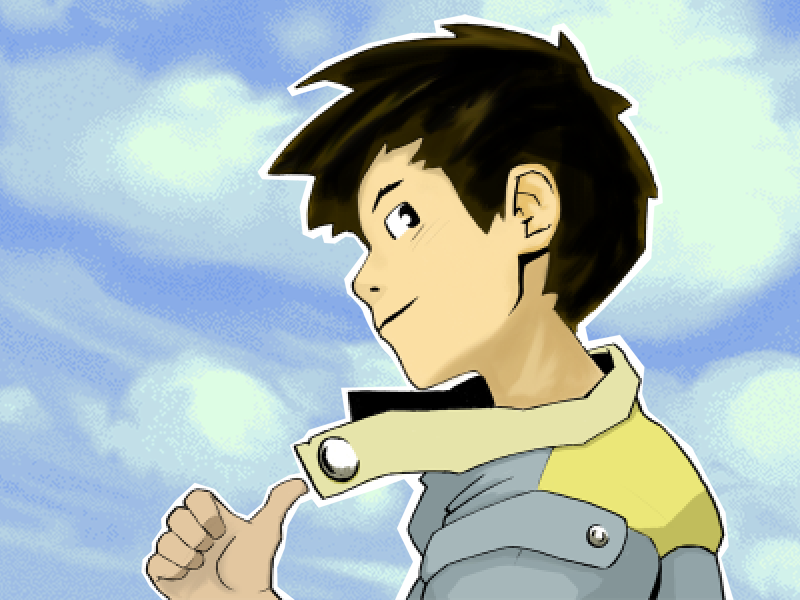
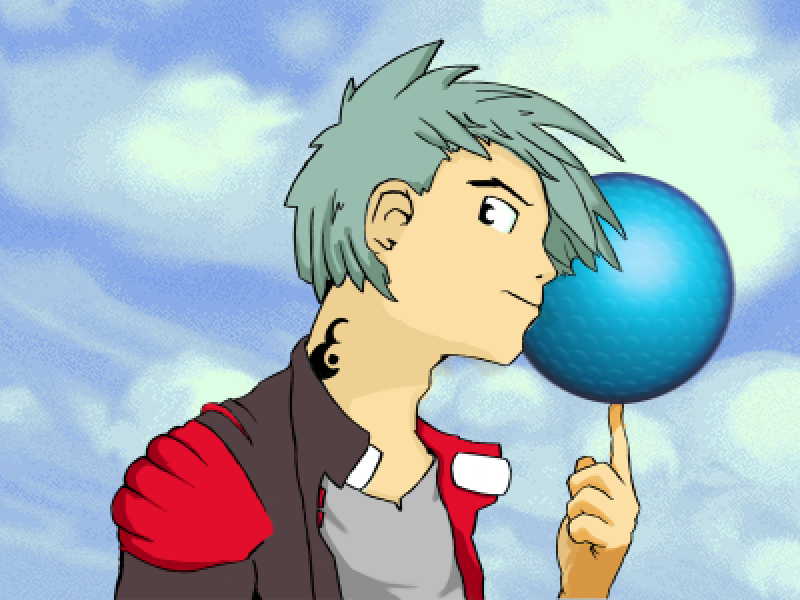
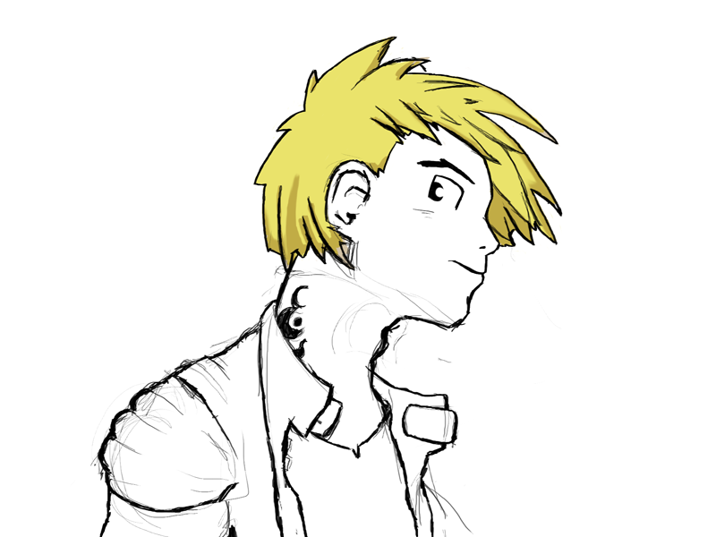
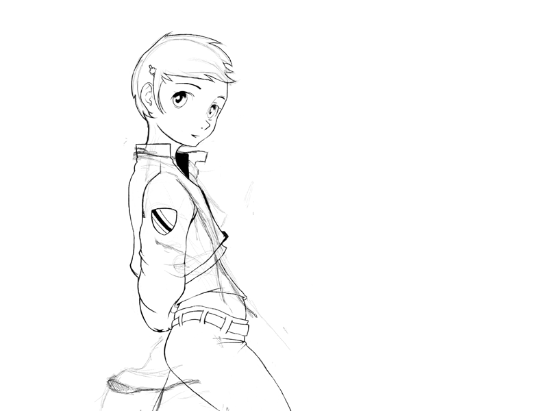

<!--#set var="PAGE_TITLE" value="Curby" -->
<!--#include virtual="_header.shtml"-->
	
	<div class="container first-element">
		
	  
	  <div class="container-fluid first-element project-header">
	  	<div class="row-fluid">
	  		
	  		<div class="span8 pull-right">
		  		
		  		<div id="project-carousel" class="carousel slide">
		  			<div class="carousel-inner">
		  				<div class="active item"></div>
		  				<div class="item"></div>
						<div class="item"></div>
						<div class="item"></div>
						<div class="item"></div>
						<div class="item"></div>
						<div class="item"></div>
						<div class="item"></div>
						<div class="item"></div>
		  			</div>
		  			<!-- Carousel nav -->  
		  			<a class="carousel-control left" href="#project-carousel" data-slide="prev">&lsaquo;</a>
		  			<a class="carousel-control right" href="#project-carousel" data-slide="next">&rsaquo;</a>
		  		</div>
 	  			
	  		</div>
	  		
	  		<div class="span3 project-outline">
	  			<h1>Curby</h1>	
	  			
	  			<div class="project-meta">
	  				<p class="description"><b>Description:</b><br /> Curby is an iPhone game I've had on the development back burner for a few years now. Whilst the game play itself is practically finished, I'm never satisfied with the artwork. This is a selection of original character illustrations that I created for the game. These were all hand drawn by me, then scanned, inked and coloured in Photoshop.</p>
	  				<p class="extra">Since these illustrations were completed, I've revisited the 'style' several times. Realistically, the only way this game's getting finished is if someone takes the artwork away from me so I can stop procrastinating. </p>
	  			</div>	
		
	  		</div>
	  		
	  
	  			
	  	</div>
	  </div>
	  
	  
	  

<!--#include virtual="_footer.shtml"-->
